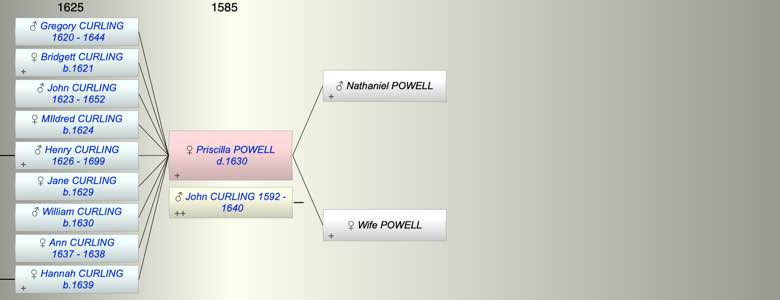

| [Index] |
| Priscilla POWELL ( - 1630) |
|  |
| m. John CURLING (1592 - 1640) |
| d. 1630 |
| Parents: |
| Nathaniel POWELL |
| Wife of Nathaniel POWELL |
| Grandchildren (5): |
| Henry CURLING (1660 - ), Thomas CURLING (1662 - ), George BOYMAN (1659 - ), Mary BOYMAN (1664 - ), Richard BOYMAN (1676 - ) |
| Events in Priscilla POWELL ( - 1630)'s life | |||||
| Date | Age | Event | Place | Notes | Src |
| Married John CURLING | not found but before 1619 | ||||
| 1620 | Birth of son Gregory CURLING | Fordwich, Kent | Note 1 | ||
| 1621 | Birth of daughter Bridgett CURLING | Fordwich, Kent | Note 2 | ||
| 1623 | Birth of son John CURLING | Fordwich, Kent | Note 3 | ||
| 1624 | Birth of daughter MIldred CURLING | Note 4 | |||
| 1626 | Birth of son Henry CURLING | St Laurence | Note 5 | ||
| 1629 | Birth of daughter Jane CURLING | St Laurence | Note 6 | ||
| 1630 | Birth of son William CURLING | St Laurence | Note 7 | ||
| 1630 | Priscilla POWELL died | Note 8 | |||
| Created on a Mac™ using iFamily for Mac™ on 8 Oct 2023 |